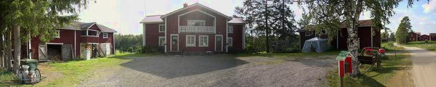

Pahoittelemme. Koronatilanteen vuoksi olemme tilapäisesti suljettuina.
Tervetuloa
Koski-Tuurin Kammarit tarjoaa majoitusta maatilalla Tuurissa.
Tuuri sijaitsee Etelä-Pohjanmaalla ja tunnetaan Veljekset Keskisen kauppakeskuksesta.
Veljekset Keskinen sekä siellä järjestettävät tapahtumat ovat kävelymatkan päässä Koski-Tuurin Kammareista.
Edullinen maatilamajoitus päärakennuksen huoneistossa sekä vieraskammareissa palvelevat
ympäri vuoden matkailijoita ja lomailijoita. Kesäkaudella suviyön tunnelmaan voi virittäytyä
pihan kahden hengen luteissa tai Piilokammarissa talonpoikaistyyliin sisustetussa vilja-aitassa.
Puutarhan 2-hengen pikkumökkissä on lämmitys vilpoisempien kesäöiden varalle.
Huoneistoon, pikkumökkiin, lutteihin sekä piilokammariin voi majoittua myös lemmikin kanssa.
Maatilaa ympäröi kaunis luonto ja idyllinen maaseutu vanhanajan ulkorakennuksineen ja kotieläimineen.
Marja- ja sienimetsien läheinen sijainti, Kuuden tähden vaellusreitistö laavuineen sekä kalastusmahdollisuus
tilan ohi virtaavan Töysänjoen rannalla, tuovat harrastetta ja toimintaa myös Koski-Tuurin Kammareiden asiakkaille.
Koski-Tuurin Kammarit palvelee lähes joka päivä. Perille on helppo löytää ja majoituksen varaaminen
onnistuu lyhyelläkin varoitusajalla.
Olette lämpimästi tervetulleita.

Meidät löytää myös facebookista, jossa on enemmän kuvia ja jonne saa laittaa esimerkiksi palautetta Koski-Tuurin Kammareista.